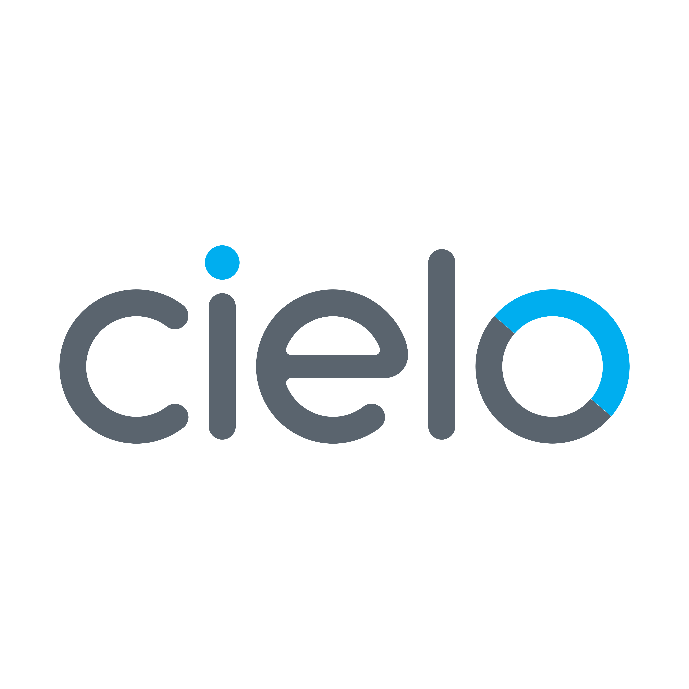
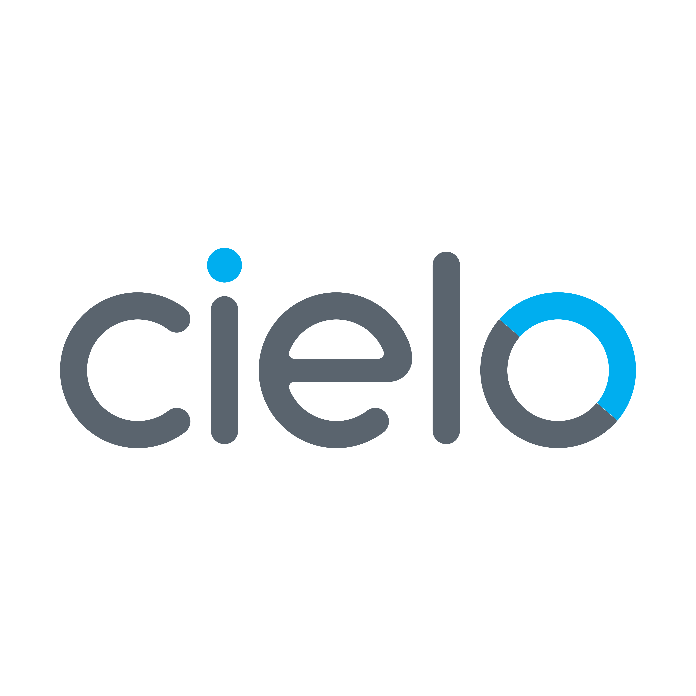
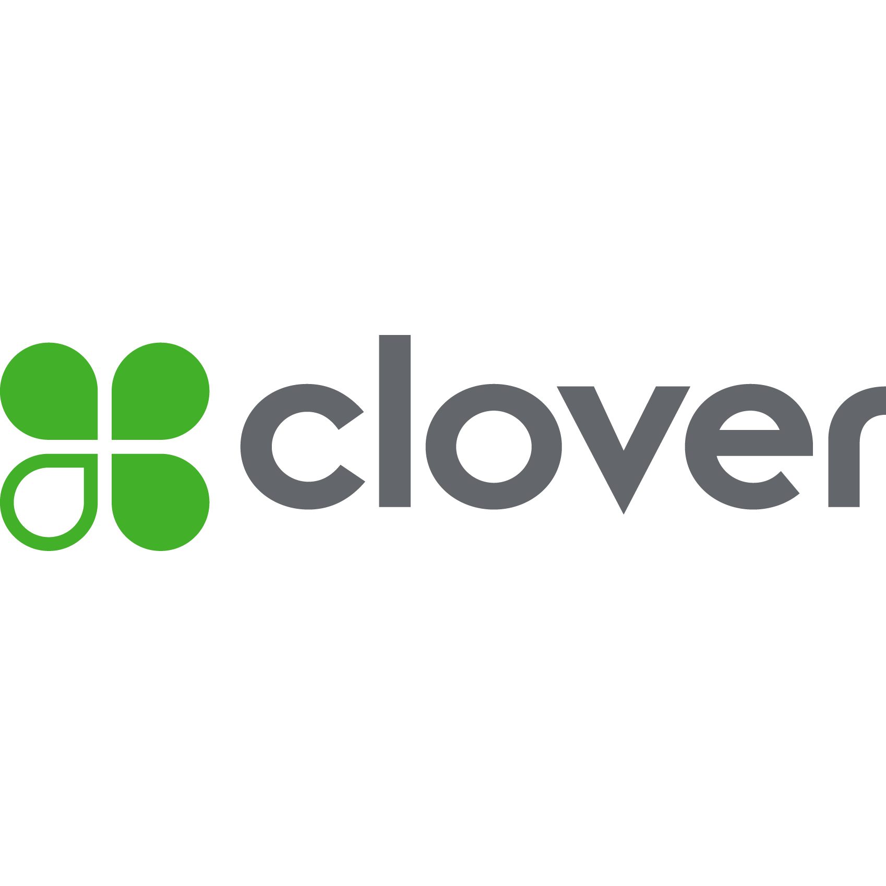
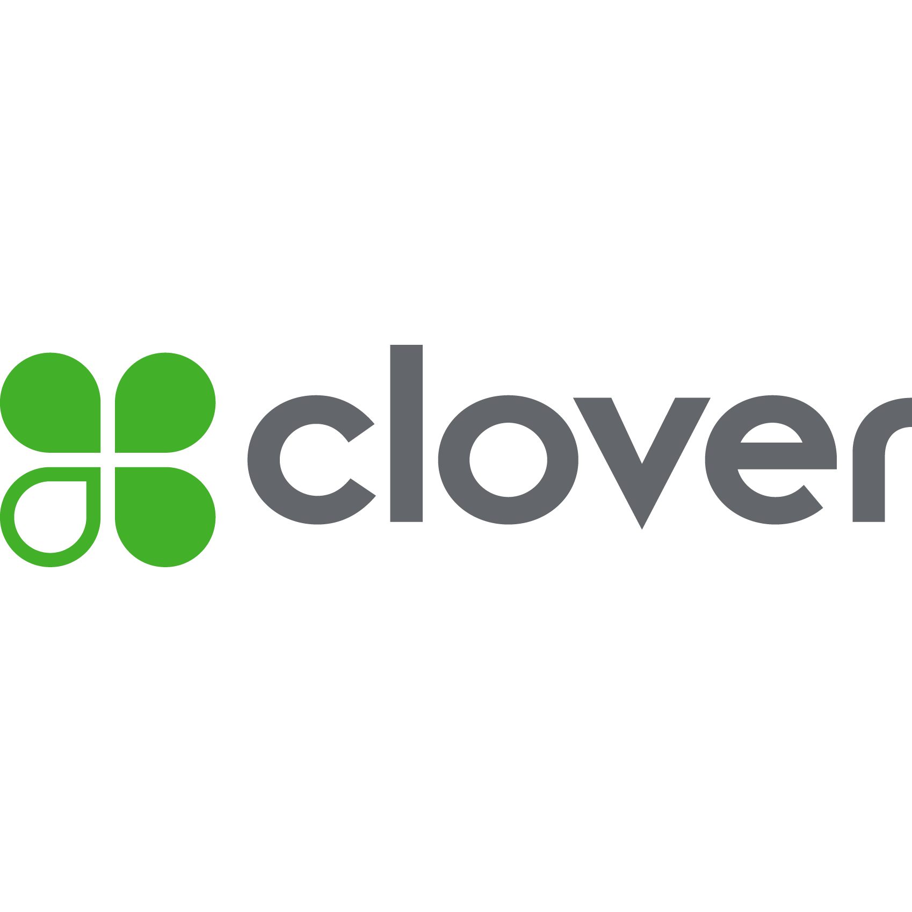
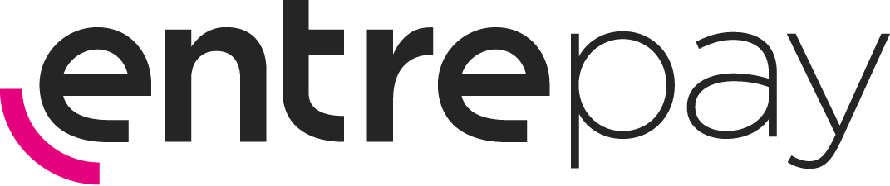
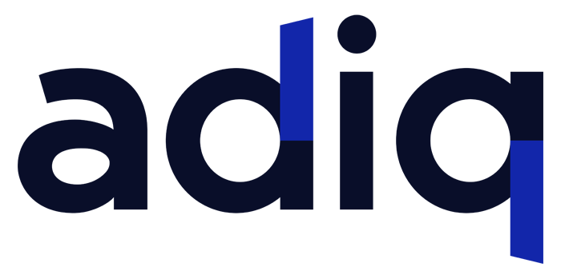
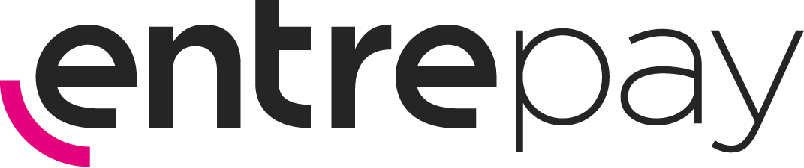
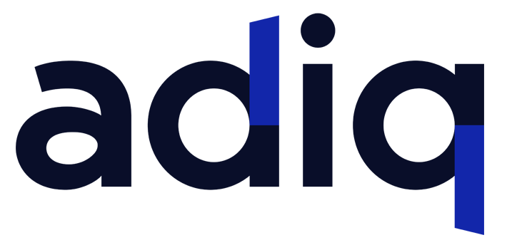

Vamos conversar?
Conte para nós os desafios do seu negócio
Com o Connect TEF, você pode enviar várias cobranças para o SmartPOS de forma organizada — ideal para atendimento em mesas, entregas externas ou vendas no balcão. Cada cobrança traz o nome do cliente, os itens e o valor, facilitando o dia a dia de operações com grande volume de transações. Uma solução pensada para o segmento food e outros modelos de atendimento móvel.
Com o Connect TEF, sua maquininha deixa de ser apenas um terminal de pagamento e se transforma em uma ferramenta de comunicação com o cliente. Aproveite o momento da transação para exibir sua marca, promoções ou campanhas — direto na tela do SmartPOS, com impacto e relevância.
 

 

 



O Connect TEF já está homologado com as principais adquirentes e subadquirentes do mercado, incluindo: Stone, Interpag, Cielo, Clover, Pagbank, Mercado Pago, BIN, CEOPAG, Caixa, Sicred, Getnet, Pinbank, Vero, C6 Bank, Rede (Itaú), Entrepay, Cappta, Adiq, Phoebus e Fiserv. Novas homologações podem ser adicionadas conforme a demanda.
O Connect TEF é uma plataforma que conecta seu sistema (PDV, ERP, e-commerce, delivery) a múltiplas maquininhas SmartPOS e adquirentes, com uma única integração. Isso elimina a necessidade de homologações separadas e simplifica o processo de pagamento integrado.
Você pode integrar sistemas web, desktop, Android, backoffice em nuvem, PDVs, ERPs, plataformas de e-commerce, aplicativos de delivery e muito mais, garantindo flexibilidade e compatibilidade ampla.
A comunicação com o SmartPOS pode ser feita tanto via rede local (Wi-Fi) quanto pela internet (3G/4G do chip da maquininha), garantindo operação contínua mesmo em ambientes com conectividade instável.
Não. O Connect TEF abstrai a complexidade da integração com múltiplas adquirentes, eliminando a necessidade de homologações individuais para cada uma delas, acelerando o tempo para colocar seu sistema em operação.
O Connect TEF oferece suporte a múltiplos protocolos, APIs, SDKs e padrões TEF tradicionais, facilitando a conexão com diferentes maquininhas SmartPOS e sistemas de pagamento.
É uma solução de pagamento eletrônico que permite integrar diretamente a maquininha de cartão com o seu sistema de vendas (PDV), automatizando processos como cobrança, emissão de comprovantes e conciliação de pagamentos.
Fornecemos uma API e/ou módulo compatível com os principais sistemas de PDV. Nossa equipe técnica também pode auxiliar no processo de integração via SDK ou arquivo XML.
Trabalhamos com as principais adquirentes do mercado (Cielo, Rede (Itaú - Laranjinha), Stone, Getnet, PagSeguro,Sicred, Caixa, Bin, Adiq, Entrepay, CeoPag, Mercado pago, Vero, Fiserv, Pinbank, Phoebus, Clover, C6, Interpag, etc..), aceitando bandeiras como Visa, MasterCard, Elo, Amex, entre outras.
Sim. O sistema oferece relatórios completos por período, bandeira, forma de pagamento e terminal. Os relatórios podem ser exportados em PDF ou Excel.
Sim! Se seu sistema já utiliza TEF — seja por troca de arquivos (TEF passivo ou modular) ou por TEF dedicado via DLL, como CliSiTef (SiTef) ou Elgin TEF — ele já é compatível com o Connect TEF. Isso significa que você pode começar a usar a solução com rapidez, sem precisar mudar nada no seu sistema.
Sim. O Connect TEF permite enviar múltiplas cobranças para o SmartPOS, organizando filas para entregadores, garçons ou atendentes, o que agiliza o processo de pagamento e reduz erros.
Como a comunicação pode ocorrer via rede local, a maquininha SmartPOS pode continuar processando pagamentos usando o chip 3G/4G para garantir a operação offline, evitando perdas ou interrupções nas vendas.
Durante a transação, o Connect TEF permite exibir imagens, vídeos e campanhas promocionais diretamente na tela do SmartPOS, transformando a maquininha em um canal ativo de marketing no ponto de venda.
Se seu sistema já utiliza TEF, a compatibilidade com o Connect TEF é imediata. Para sistemas que ainda não possuem TEF, o tempo de implementação varia conforme a complexidade, mas normalmente é possível começar a operar em poucos dias.
Entre em contato conosco para uma demonstração personalizada. Nossa equipe oferece suporte completo para integrar sua solução com as maquininhas SmartPOS e adquirentes de forma rápida e segura.
Oferecemos suporte técnico via chat, telefone ou e-mail, com plantão em horários comerciais e atendimento emergencial 24h em casos críticos.
Sim. A solução permite múltiplos terminais funcionando de forma sincronizada com um único PDV ou sistema de gestão.
Sim. A plataforma conta com integração direta via API para ERPs, facilitando o envio e recebimento automático de dados de vendas e pagamentos.
Conte para nós os desafios do seu negócio
Compatível com sistemas que usam TEF padrão como Sitef, Elgin ou troca de arquivos (INTPOS). Se seu sistema já usa TEF, ele já é compatível com o Connect TEF.
Fale com o especialista